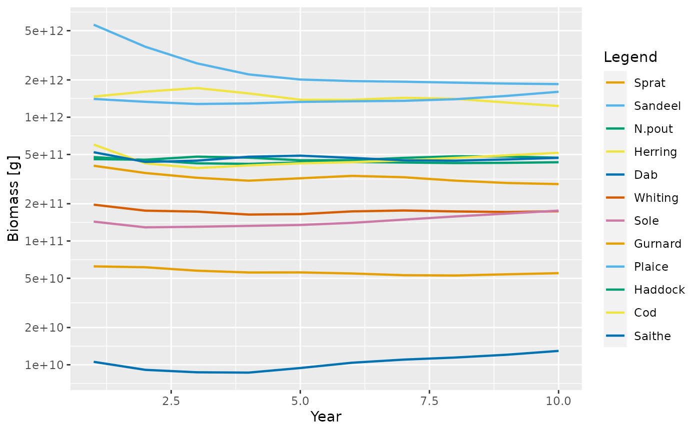

Exploring the Simulation Results
Edit this page. Source:vignettes/exploring_the_simulation_results.Rmd
exploring_the_simulation_results.RmdIntroduction
In the sections on the multispecies model and on running a simulation we saw how to set up a model and project it forward through time under our desired fishing scenario. The result of running a projection is an object of class MizerSim. What do we then do? How can we explore the results of the simulation? In this section we introduce a range of summaries, plots and indicators that can be easily produced using functions included in mizer.
We will use the following MizerSim object for these examples, where the effort array is the one we created in the previous section on running a simulation:
sim <- project(NS_params, effort = effort_array, dt = 0.1, t_save = 1)Accessing the simulation results
The projected species abundances at size through time can be obtained with n(sim). This returns a three-dimensional array (time x species x size). Consequently, this array can get very big so inspecting it can be difficult. In the example we have just run, the time dimension of n has 10 rows (one for the initial population and then one for each of the saved time steps). There are also 12 species each with 100 sizes. We can check this by running the dim() function and looking at the dimensions of the n array:
## [1] 10 12 100To pull out the abundances of a particular species through time at size you can subset the array. For example to look at Cod through time you can use:
n(sim)[, "Cod", ]This returns a two-dimensional array: time x size, containing the cod abundances. The time dimension depends on the value of the argument t_save when project() was run. You can see that even though we specified dt to be 0.1 when we called project(), the t_save = 1 argument has meant that the output is only saved every year.
Often we are particularly interested in the results at the final time-step. These we can access with
final_n(sim)which is a two dimensional array (species x size).
The projected plankton abundances can be accesses similarly with
n_pp(sim)This returns a two-dimensional array (time x size). And if we are only interested in the final time step
final_n_pp(sim)returns a vector with one entry for each size class.
Summary functions
As well as the summary() methods that are available for both MizerParams and MizerSim objects, there are other useful summary functions to pull information out of a MizerSim object. A description of the different summary functions available is given in the summary functions help page.
All of these functions have help files to explain how they are used. (It is also possible to use most of these functions with a MizerParams object if you also supply the population abundance as an argument. This can be useful for exploring how changes in parameter value or abundance can affect summary statistics and indicators. We won’t explore this here but you can see their help files for more details.)
The functions getBiomass() and getN() have additional arguments that allow the user to set the size range over which to calculate the summary statistic. This is done by passing in a combination of the arguments min_l, min_w, max_l and max_w for the minimum and maximum length or weight. If min_l is specified there is no need to specify min_w and so on. However, if a length is specified (minimum or maximum) then it is necessary for the species parameter data.frame (see the species parameters section) to include the parameters a and b for length-weight conversion. It is possible to mix length and weight constraints, e.g. by supplying a minimum weight and a maximum length. The default values are the minimum and maximum weights of the spectrum, i.e. the full range of the size spectrum is used.
Examples of using the summary functions
Here we show a simple demonstration of using a summary function using the sim object we created earlier. Here, we use getSSB() to calculate the SSB of each species through time (note the use of the head() function to only display the first few rows).
## [1] 10 12head(ssb)## sp
## time Sprat Sandeel N.pout Herring Dab
## 1 210810187944 5.378411e+12 183159668810 442644004328 6885675637
## 2 156932488004 3.493764e+12 152230982859 494654091559 5246379037
## 3 138299651327 2.507969e+12 135262489045 595226390889 5022831933
## 4 118900122522 1.996146e+12 110107899230 563227596930 4848206900
## 5 114054941294 1.788411e+12 111479135534 417591372258 5190388215
## 6 125565150424 1.734381e+12 123813823519 346974700476 6101101285
## sp
## time Whiting Sole Gurnard Plaice Haddock Cod
## 1 113572753271 63630241794 9102232936 303365911495 151965178081 531536722966
## 2 87610185076 46567333565 7337189881 231975574536 117118972874 345611082736
## 3 91072578524 45079746469 7457904449 239586033500 134187252928 289032158706
## 4 84699035276 48968874045 6807595296 262872829619 156922235460 306463947360
## 5 76896713834 53010884725 5559194265 277541693141 144665540981 333802232778
## 6 81936403881 55867927582 5311170619 275927839989 122564896135 350226263668
## sp
## time Saithe
## 1 327578246235
## 2 218095242053
## 3 196262308663
## 4 225923260034
## 5 269222630226
## 6 285988131188As mentioned above, we can specify the size range for the getsummaryBiomass() and getN() functions. For example, here we calculate the total biomass of each species but only include individuals that are larger than 10 g and smaller than 1000 g.
biomass <- getBiomass(sim, min_w = 10, max_w = 1000)
head(biomass)## sp
## time Sprat Sandeel N.pout Herring Dab
## 1 244119195586 4.589606e+12 238847649463 1.273446e+12 8373096367
## 2 188880088527 2.885094e+12 213058605764 1.402821e+12 6795673464
## 3 169174980758 1.928185e+12 185365480186 1.523138e+12 6492436223
## 4 146580764459 1.407346e+12 166275452596 1.353671e+12 6256995880
## 5 144146231991 1.169506e+12 177383188141 1.168714e+12 6811141448
## 6 159924531772 1.099438e+12 191096154870 1.167862e+12 7858439264
## sp
## time Whiting Sole Gurnard Plaice Haddock
## 1 161515844306 127400523235 24759887586 766087469917 333172493301
## 2 140197214128 111892434382 23947413801 720086423818 332832082958
## 3 139019544073 113533591309 23701143522 738858070957 369651748297
## 4 126686485846 115115946089 20246510677 707829101640 354257032281
## 5 126023728505 115701211797 18888004862 657619933333 321686180709
## 6 136463035723 120931199142 21029930096 662463662096 322502406784
## sp
## time Cod Saithe
## 1 45159646196 158969500338
## 2 51787452748 182296310048
## 3 62533124437 215183314678
## 4 59131338576 213550678900
## 5 52065365061 175071954991
## 6 49424148341 138896092989Functions for calculating indicators
Functions are available to calculate a range of indicators from a MizerSim object after a projection. A description of the different indicator functions available is given in the indicator functions help page.. You can read the help pages for each of the functions for full instructions on how to use them, along with examples.
With all of the functions in the table it is possible to specify the size range of the community to be used in the calculation (e.g. to exclude very small or very large individuals) so that the calculated metrics can be compared to empirical data. This is used in the same way that we saw with the function getBiomass() in the section on summary functions for MizerSim objects.. It is also possible to specify which species to include in the calculation. See the help files for more details.
Examples of calculating indicators
For these examples we use the sim object we created earlier.
The slope of the community can be calculated using the getCommunitySlope() function. Initially we include all species and all sizes in the calculation (only the first five rows are shown):
slope <- getCommunitySlope(sim)
head(slope)## slope intercept r2
## 1 -0.7822250 25.40779 0.8722251
## 2 -0.7971794 25.24768 0.8667732
## 3 -0.8068909 25.21258 0.8666091
## 4 -0.8154026 25.23430 0.8678455
## 5 -0.8230990 25.24143 0.8685542
## 6 -0.8274029 25.22733 0.8672705This gives the slope, intercept and \(R^2\) value through time (see the help file for getCommunitySlope for more details).
We can include only the species we want with the species argument. Below we only include demersal species. We also restrict the size range of the community that is used in the calculation to between 10 g and 5 kg. The species argument is a character vector of the names of the species that we want to include in the calculation.
dem_species <- c("Dab", "Whiting", "Sole", "Gurnard", "Plaice", "Haddock",
"Cod", "Saithe")
slope <- getCommunitySlope(sim, min_w = 10, max_w = 5000,
species = dem_species)
head(slope)## slope intercept r2
## 1 -1.096584 26.88942 0.9749307
## 2 -1.177019 27.21209 0.9796174
## 3 -1.149421 27.13085 0.9755690
## 4 -1.062345 26.70235 0.9748982
## 5 -1.026893 26.49950 0.9820535
## 6 -1.060272 26.67425 0.9810134Plotting the results
R is very powerful when it comes to exploring data through plots. Two useful packages for plotting are ggplot2 and plotly. These use data.frames for input data whereas many of the mizer functions return arrays or matrices. Fortunately it is straightforward to turn arrays and matrices into data.frames using the melt() function from the reshape2 package that mizer makes available to you. Although mizer does include some dedicated plots, it is definitely worth your time getting to grips with these other plotting packages. This will make it possible for you to make your own plots. We provide some details in the section on using ggplot2 and plotly with mizer.
Included in mizer are several dedicated plots that use MizerSim objects as inputs (see the plots help page.). As well as displaying the plots, these functions all return objects of type ggplot from the ggplot2 package, meaning that they can be further modified by the user (e.g. by changing the plotting theme). See the help page of the individual plot functions for more details. The generic plot() method has also been overloaded for MizerSim objects. This produces several plots in the same window to provide a snapshot of the results of the simulation.
Some of the plots plot values by size (for example plotFeedingLevel() and plotSpectra()). For these plots, the default is to use the data at the final time step of the projection. With these plotting functions, it is also possible to specify a different time, or a time range to average the values over before plotting.
Plotting examples
Using the plotting functions is straightforward. For example, to plot the total biomass of each species against time you use the plotBiomass() function:
plotBiomass(sim)
As mentioned above, some of the plot functions plot values against size at a point in time (or averaged over a time period). For these plots it is possible to specify the time step to plot, or the time period to average the values over. The default is to use the final time step. Here we plot the abundance spectra (biomass), averaged over time = 5 to 10:
plotSpectra(sim, time_range = 5:10)
As mentioned above, and as we have seen several times in this guide, the generic plot() method has also been overloaded. This produces 5 plots in the same window (plotFeedingLevel(), plotBiomass(), plotPredMort(), plotFMort() and plotSpectra()). It is possible to pass in the same arguments that these individual plots use, e.g. arguments to change the time period over which the data is averaged.
plot(sim)
The next section describes how to use what we have learned to model the North Sea.